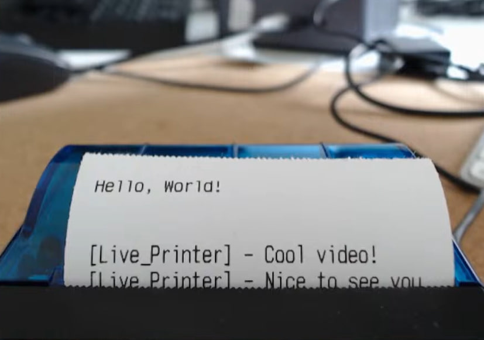
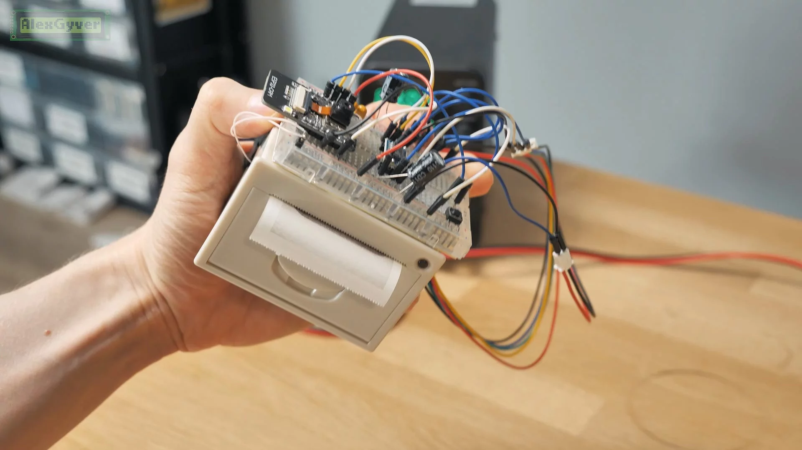
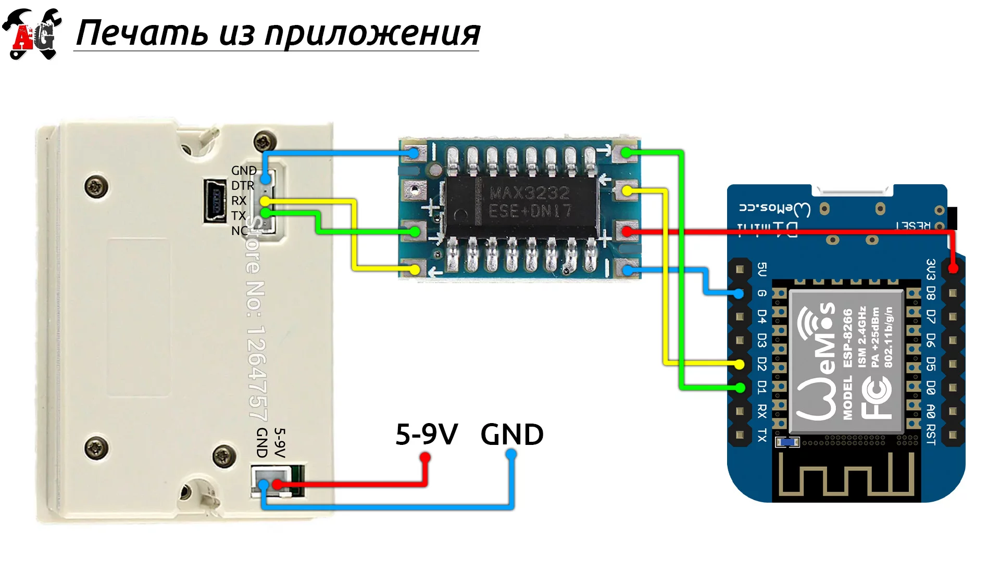

Введение
Проект посвящён созданию системы удалённой печати текстовых сообщений и изображений с использованием Telegram-бота и портативного термопринтера.
Основная идея — связать цифровую информацию из мессенджера с её физическим выводом на бумагу.
Объект исследования: системы удалённой печати и взаимодействия программного обеспечения с аппаратными устройствами.
Предмет исследования: использование Telegram-бота для передачи данных на термопринтер.

Цель и задачи проекта
Цель: разработать систему, позволяющую печатать текст и изображения на термопринтере с помощью Telegram-бота.
Задачи:
- Изучить принцип работы термопринтеров и термобумаги.
- Подобрать подходящее оборудование и способ подключения.
- Разработать Telegram-бота на Python для приёма команд и файлов.
- Настроить серверную часть для обработки входящих данных.
- Интегрировать все компоненты в единую систему.
- Провести тестирование качества и стабильности печати.
Актуальность и значимость
- Проект формирует практические навыки программирования и автоматизации.
- Показывает реальную связку «бот — сервер — устройство» на прикладной задаче.
- Может использоваться в учебной среде: печать заметок, чек-листов, напоминаний.
- Развивает инженерное мышление: от идеи до рабочего прототипа.
Ценность проекта: для автора — практика разработки; для школы — пример прикладной ИТ-работы; для общества — простая автоматизация рутинной печати.
Описание оборудования
Используется кассовый термопринтер (ККМ), печатающий за счёт нагрева термобумаги. Чернила не требуются, обслуживание проще, чем у струйных и лазерных решений.

Принцип работы системы
- Пользователь отправляет боту текст или изображение.
- Бот передаёт данные на сервер обработки.
- Сервер подготавливает данные к формату термопечати.
- Подготовленные данные отправляются на принтер по USB.
- Термопринтер выполняет печать.

Технические требования
Программная часть
- Python 3.10+.
- Библиотеки: Telegram Bot API, Pillow, pySerial.
- Стабильное интернет-соединение для работы бота.
Аппаратная часть
- Термопринтер с USB-подключением.
- ПК/мини-ПК для круглосуточной работы сервиса.
- Термобумага совместимой ширины.
План реализации
- Постановка задачи и анализ источников.
- Подбор оборудования и тестовое подключение.
- Разработка Telegram-бота.
- Написание серверной логики и обработка изображений.
- Интеграция и отладка системы.
- Подготовка отчёта и презентации.
Дополнительные материалы для интересующихся
Как подготовить изображение к термопечати
- Преобразовать изображение в градации серого.
- Уменьшить ширину до ширины печатной области принтера.
- Повысить контраст, убрать мелкий шум.
- Преобразовать в ч/б формат и отправить на печать.
Почему выбран Telegram-бот
- Не нужен отдельный интерфейс или приложение.
- Удобная отправка файлов с телефона и ПК.
- Простое масштабирование команд и сценариев.
Возможные улучшения
- Очередь печати и уведомления о статусе задания.
- Поддержка нескольких пользователей.
- Печать QR-кодов и шаблонных карточек.
Вывод
В ходе проекта разработан рабочий прототип системы удалённой термопечати через Telegram-бота. Поставленная цель достигнута: реализован полный цикл от получения сообщения до печати на устройстве. Проект подтвердил практическую ценность интеграции программной и аппаратной частей и может быть расширен для школьных и бытовых сценариев автоматизации.